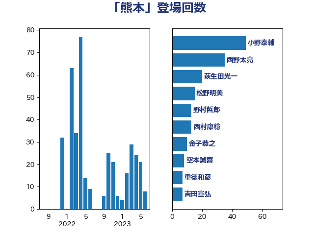

単語「熊本」

| 小野泰輔 | 日本維新の会 | 49 回 |
| 西野太亮 | 自由民主党 | 35 回 |
| 萩生田光一 | 自由民主党 | 20 回 |
| 松野明美 | 日本維新の会 | 15 回 |
| 野村哲郎 | 自由民主党 | 13 回 |
| 西村康稔 | 自由民主党 | 13 回 |
| 金子恭之 | 自由民主党 | 10 回 |
| 空本誠喜 | 日本維新の会 | 8 回 |
| 重徳和彦 | 立憲民主党 | 7 回 |
| 吉田宣弘 | 公明党 | 7 回 |
| 高木かおり | 日本維新の会 | 5 回 |
| 河野義博 | 公明党 | 5 回 |
| 仁比聡平 | 日本共産党 | 5 回 |
| 荒井優 | 立憲民主党 | 4 回 |
| 本田顕子 | 自由民主党 | 4 回 |
| 打越さく良 | 立憲民主党 | 4 回 |
| 岸田文雄 | 自由民主党 | 4 回 |
| 土田慎 | 自由民主党 | 4 回 |
| 長浜博行 | 無所属 | 3 回 |
| 長友慎治 | 国民民主党 | 3 回 |
| 遠藤良太 | 日本維新の会 | 3 回 |
| 芳賀道也 | 国民民主党 | 3 回 |
| 田村貴昭 | 日本共産党 | 3 回 |
| 斉藤鉄夫 | 公明党 | 3 回 |
| 小川淳也 | 立憲民主党 | 3 回 |
| 天畠大輔 | れいわ新選組 | 3 回 |
| 高橋千鶴子 | 日本共産党 | 2 回 |
| 近藤和也 | 立憲民主党 | 2 回 |
| 西岡秀子 | 国民民主党 | 2 回 |
| 藤木眞也 | 自由民主党 | 2 回 |
| 篠原孝 | 立憲民主党 | 2 回 |
| 笠井亮 | 日本共産党 | 2 回 |
| 窪田哲也 | 公明党 | 2 回 |
| 田嶋要 | 立憲民主党 | 2 回 |
| 片山さつき | 自由民主党 | 2 回 |
| 漆間譲司 | 日本維新の会 | 2 回 |
| 渡辺創 | 立憲民主党 | 2 回 |
| 榛葉賀津也 | 国民民主党 | 2 回 |
| 末松信介 | 自由民主党 | 2 回 |
| 平林晃 | 公明党 | 2 回 |
| 山岡達丸 | 立憲民主党 | 2 回 |
| 宮本徹 | 日本共産党 | 2 回 |
| 大家敏志 | 自由民主党 | 2 回 |
| 塩崎彰久 | 自由民主党 | 2 回 |
| 嘉田由紀子 | 無所属 | 2 回 |
| 保岡宏武 | 自由民主党 | 2 回 |
| 伊藤孝恵 | 国民民主党 | 2 回 |
| 齋藤健 | 自由民主党 | 1 回 |
| 高良鉄美 | 無所属 | 1 回 |
| 阿部弘樹 | 日本維新の会 | 1 回 |
| 鈴木義弘 | 国民民主党 | 1 回 |
| 野間健 | 立憲民主党 | 1 回 |
| 赤嶺政賢 | 日本共産党 | 1 回 |
| 衛藤晟一 | 自由民主党 | 1 回 |
| 細田健一 | 自由民主党 | 1 回 |
| 福田達夫 | 自由民主党 | 1 回 |
| 福山哲郎 | 立憲民主党 | 1 回 |
| 礒崎哲史 | 国民民主党 | 1 回 |
| 玉木雄一郎 | 国民民主党 | 1 回 |
| 猪瀬直樹 | 日本維新の会 | 1 回 |
| 片山大介 | 日本維新の会 | 1 回 |
| 熊谷裕人 | 立憲民主党 | 1 回 |
| 清水貴之 | 日本維新の会 | 1 回 |
| 浜田聡 | NHK党 | 1 回 |
| 河野太郎 | 自由民主党 | 1 回 |
| 池畑浩太朗 | 日本維新の会 | 1 回 |
| 池下卓 | 日本維新の会 | 1 回 |
| 江藤拓 | 自由民主党 | 1 回 |
| 櫻田義孝 | 自由民主党 | 1 回 |
| 櫻井充 | 自由民主党 | 1 回 |
| 櫛渕万里 | れいわ新選組 | 1 回 |
| 梅谷守 | 立憲民主党 | 1 回 |
| 梅村みずほ | 日本維新の会 | 1 回 |
| 柴田巧 | 日本維新の会 | 1 回 |
| 柚木道義 | 立憲民主党 | 1 回 |
| 松本洋平 | 自由民主党 | 1 回 |
| 松下新平 | 自由民主党 | 1 回 |
| 斎藤嘉隆 | 立憲民主党 | 1 回 |
| 徳永エリ | 立憲民主党 | 1 回 |
| 庄子賢一 | 公明党 | 1 回 |
| 工藤彰三 | 自由民主党 | 1 回 |
| 岩谷良平 | 日本維新の会 | 1 回 |
| 岩渕友 | 日本共産党 | 1 回 |
| 山本剛正 | 日本維新の会 | 1 回 |
| 小里泰弘 | 自由民主党 | 1 回 |
| 小林鷹之 | 自由民主党 | 1 回 |
| 小林茂樹 | 自由民主党 | 1 回 |
| 小宮山泰子 | 立憲民主党 | 1 回 |
| 小倉將信 | 自由民主党 | 1 回 |
| 大石あきこ | れいわ新選組 | 1 回 |
| 大島敦 | 立憲民主党 | 1 回 |
| 大島九州男 | れいわ新選組 | 1 回 |
| 塩村あやか | 立憲民主党 | 1 回 |
| 吉良よし子 | 日本共産党 | 1 回 |
| 吉田久美子 | 公明党 | 1 回 |
| 加藤勝信 | 自由民主党 | 1 回 |
| 八木哲也 | 自由民主党 | 1 回 |
| 佐藤正久 | 自由民主党 | 1 回 |
| 井野俊郎 | 自由民主党 | 1 回 |
| 五十嵐清 | 自由民主党 | 1 回 |
| 下野六太 | 公明党 | 1 回 |
| 三上えり | 立憲民主党 | 1 回 |